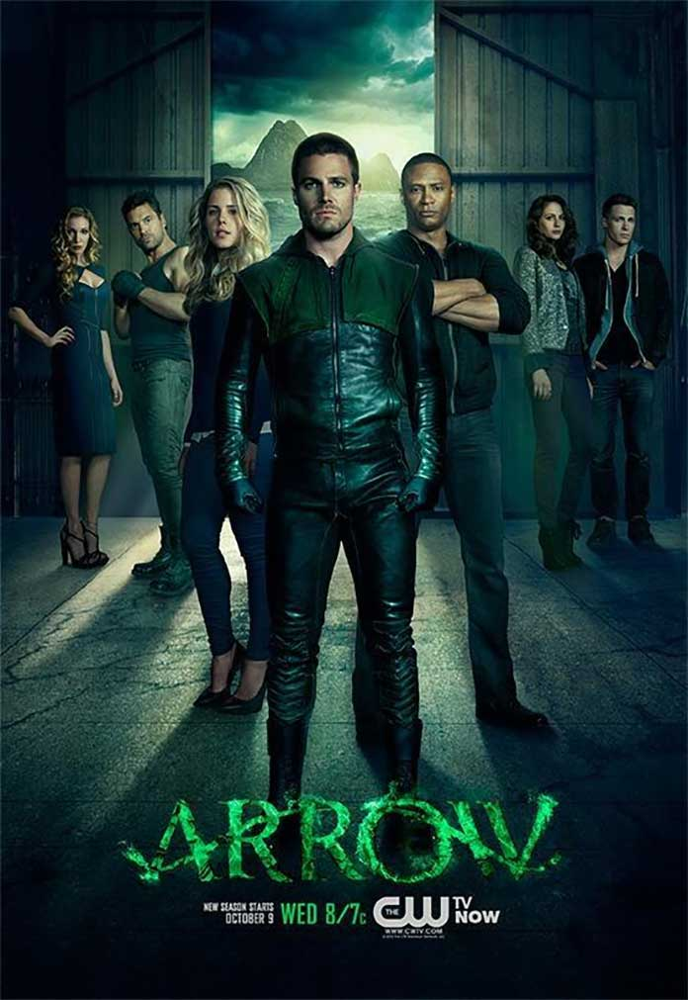

Recomendacion de Septiembre
"Arrow" es una serie de televisión de superhéroes basada en el personaje de cómic de DC Comics, Green Arrow (Flecha Verde). La serie se centra en Oliver Queen, un multimillonario que, después de pasar varios años en una isla desierta, regresa a su ciudad natal, Starling City, con un conjunto de habilidades recién adquiridas y una misión en mente: limpiar la ciudad de la corrupción y la delincuencia, adoptando la identidad de "Arrow" (Flecha) o "Green Arrow." A lo largo de las temporadas, "Arrow" sigue a Oliver mientras lucha contra una variedad de villanos y amenazas, al mismo tiempo que forma un equipo de héroes y aliados que incluye a personas como Black Canary, Speedy, y Arsenal. La serie también explora el pasado de Oliver a través de flashbacks que revelan cómo adquirió sus habilidades y su lucha por la supervivencia en la isla. "Arrow" es conocida por su tono oscuro y realista, así como por sus emocionantes secuencias de acción y tramas de intriga. La serie fue parte del "Arrowverse," un universo compartido de series de superhéroes de DC que incluye "The Flash," "Supergirl," "Legends of Tomorrow," y otras, y ayudó a popularizar el género de superhéroes en la televisión. La serie se emitió desde 2012 hasta 2020 y tuvo un impacto significativo en la cultura pop y en la expansión del género de superhéroes en la televisión.
